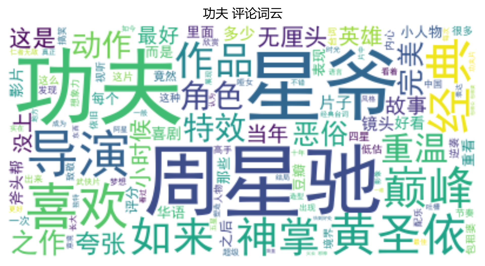
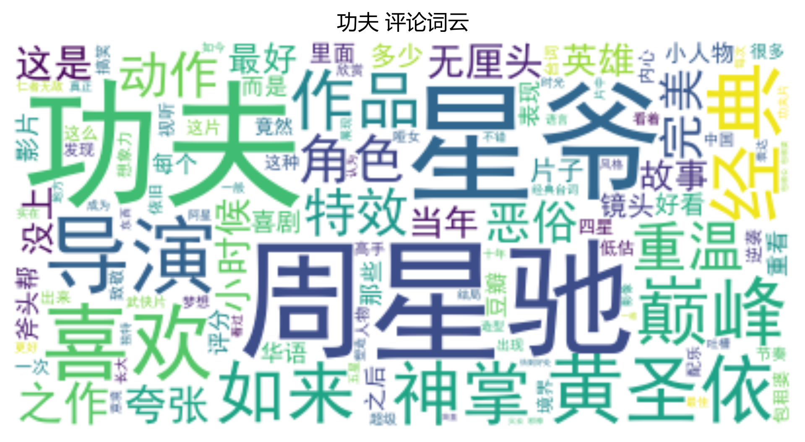
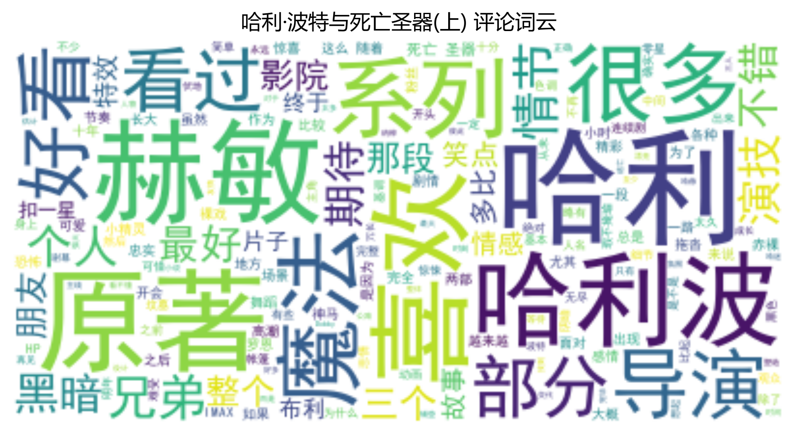
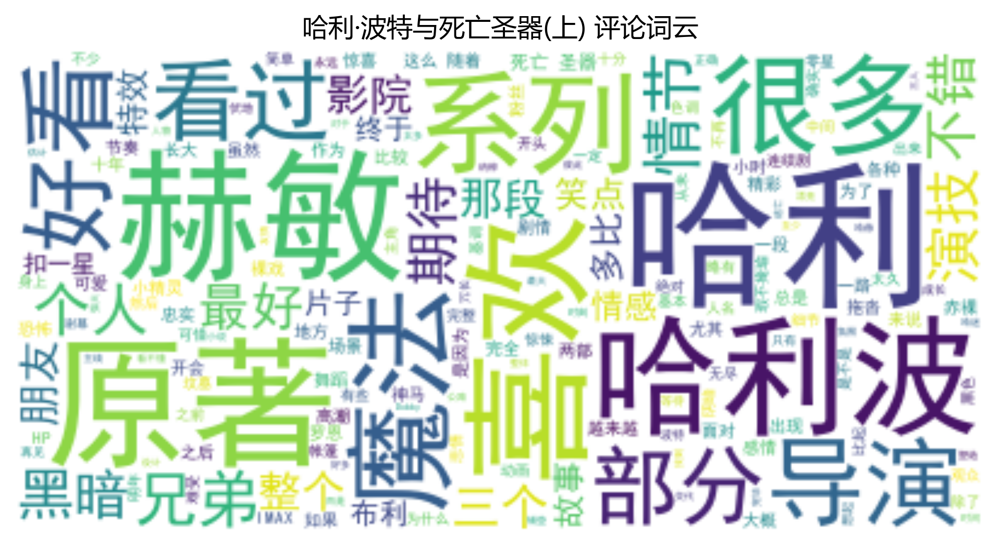

数据分析


类型频率统计
加载中...
| 类型 | 出现次数 |
|---|
展开表格
在光影的长河中，250部佳作如星辰般闪耀，跨越87载时光(1936-2023)，承载着不同文化的叙事密码。
豆瓣电影Top250分析报告
基本统计:
- 电影总数: 147
- 平均评分: 9.06
- 平均评价人数: 1,024,265
- 时间跨度: 1936 至 2023
热门国家:
美国 70部 | 日本 17部 | 中国香港 11部
热门类型:
剧情 115次 | 爱情 37次 | 喜剧 33次
| 类型 | 出现次数 |
|---|


 



 

_wordcloud.png)
情感得分与电影评分的皮尔逊相关系数:
0.239802391206422
LDA主题模型关键词:
- 主题 1: 爱情, 生活, 喜欢, 美好, 故事, 如果, you, 片子, 女主, 生命
- 主题 2: 故事, 喜欢, 剧情, 好看, 经典, 导演, 人物, 片子, 虽然, 镜头6
- 主题 3: 导演, 这么, 故事, 问题, 男主, 观众, 表演, 中国, 一次, 角色
- 主题 4: 世界, 人类, 故事, 宫崎骏, 人生, 现实, 美好, 动画, 存在, 永远
- 主题 5: 孩子, 如果, 男人, 人生, 女性, 女人, 父亲, 这种, 希望, 选择
数据来源：豆瓣电影 © 2025